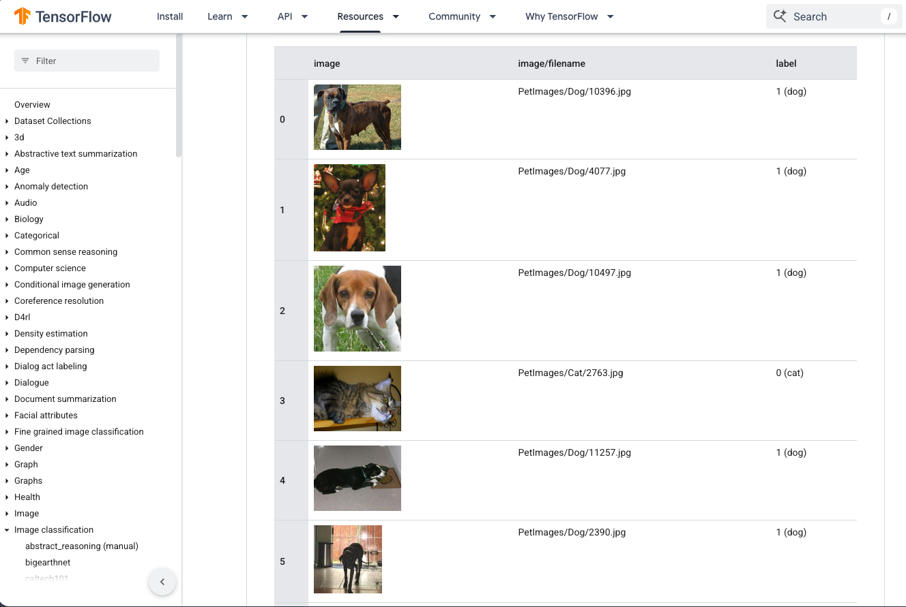
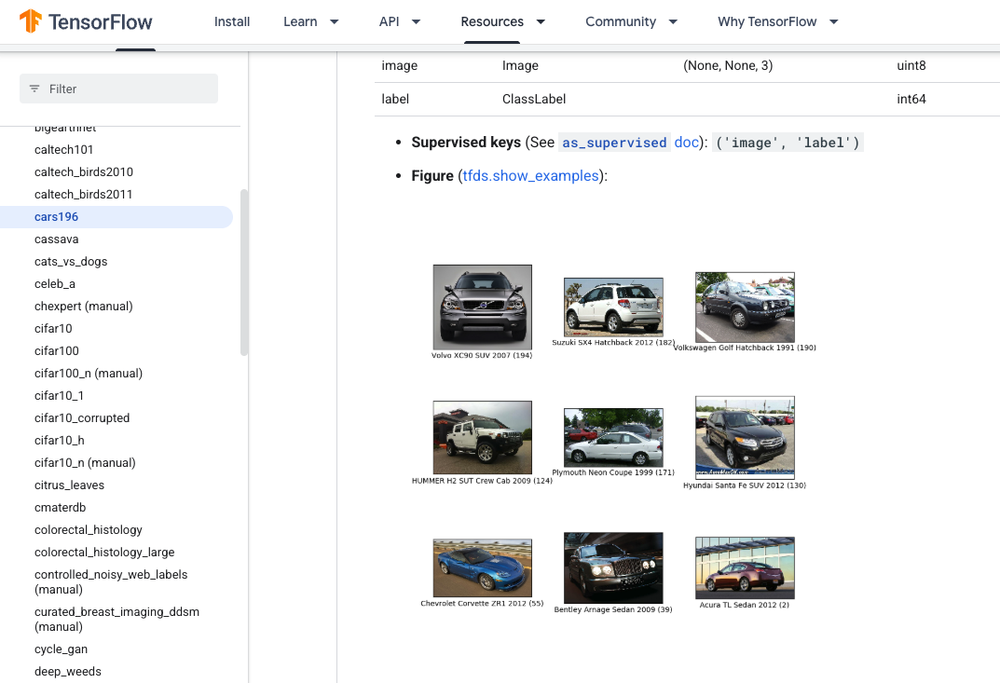

A companion to How AI Predicts the Next Word
How Image Generation Works
We will answer it properly at the end. Click anywhere, tap, or use the arrow keys to move through.
Start small: a cell that goes ping
A brain cell, or the artificial kind in this machine, mostly just sits there. Sometimes it goes ping. It decides to ping based on how many pings are arriving from the cells connected to it, and how strong each connection is. That is the whole component. Everything else is just lots of them.
Click the small cells to make them ping. The thick wire counts double, because that connection is strong.
arriving: 0 · needs 3 to fire
Stack them up: edges, then beak, then bird
How do you recognise a bird? You do not write rules for "bird". You build upward, layer by layer, each layer pinging when the layer below gives it something to ping about.
Nobody sets those connections by hand
The connection strengths start out random. You show the machine a labelled picture and ask: bird or not? Then you nudge every connection a tiny bit in whichever direction makes the guess less wrong, and you do that across millions of labelled pictures, millions of times. That nudging is the learning. That is all "training" is.
The machine's guess: 50% bird, which is a coin flip. It has no idea.
labelled pictures seen: 0 · connections: random
This is not a mystery ingredient
A labelled dataset is just pictures with a word attached to each one. You can browse them. Here is a real one, open in the TensorFlow Datasets catalogue: a file path, a thumbnail, and a label that says 0 (cat) or 1 (dog). That is the whole format. About 23,000 photos in this one.

The label does not have to be "car"
Cat or dog is a coarse difference. But there is nothing special about coarse. Here is cars196, another catalogue dataset: 16,185 photographs sorted into 196 classes, and the class is the make, the model and the year.

So: crocodile or alligator
Here in the Territory we know the difference at a glance. Give a machine enough labelled photographs and it would find the same tells, without anyone typing a rule. Click each feature.
Three tells, all learnable from examples.
Words and pictures, filed in the same place
In February 2021 a team at OpenAI trained two models at once: one that reads text, one that looks at pictures. Both produce a list of 512 numbers, which you can think of as an address. They were trained on 400 million picture-and-caption pairs so that a picture and its own caption land at nearly the same address, and mismatched pairs land far apart. The model is called CLIP.
The real space has 512 dimensions. This is a flat sketch of it, so you can see the idea: nearness means "these mean the same sort of thing".
Pick a word. It gets an address in the same space the pictures live in, and the nearest picture lights up.
The addresses behave like arithmetic on ideas. In the video linked at the end, the presenter takes a photo of himself in a hat, subtracts a photo of himself without one, and searches for the word closest to what is left over.
Source: Radford et al., "Learning Transferable Visual Models From Natural Language Supervision", OpenAI, 26 February 2021, arxiv.org/abs/2103.00020. The hat demonstration is from the Welch Labs video linked at the end, at 6:24.
Now run the whole thing in reverse
CLIP only goes one way; it turns pictures and words into addresses, and cannot turn an address back into a picture. Something else does that. Start with a square of pure random static, like an old TV between channels. Then ask, over and over: if this static were slowly becoming "a crocodile driving a Hilux", which speckles should change, and which way?
Source: Ho, Jain and Abbeel, "Denoising Diffusion Probabilistic Models", UC Berkeley, 19 June 2020, arxiv.org/abs/2006.11239. The blurry-tree demonstration is in the Welch Labs video at 10:23.
Asking is not the same as getting
Handing the machine your words is called conditioning, and on its own it is disappointingly weak. Researchers asked a well known model for a tree in the desert and got a desert, and a shadow where a tree should be, and no tree. The fix is to compare two runs: one that was told your words, and one that was told nothing. The difference between them points towards what your words actually added, and you can turn that up.
guidance scale: 0 · conditioning only
Illustration of a published result; the actual generated images are in the Welch Labs video at 33:08. Method: Ho and Salimans, "Classifier-Free Diffusion Guidance", arxiv.org/abs/2207.12598, NeurIPS workshop December 2021. The tree-in-the-desert runs used Stable Diffusion; Rombach et al., "High-Resolution Image Synthesis with Latent Diffusion Models", Heidelberg, 20 December 2021, arxiv.org/abs/2112.10752.
Why everyone's crocodile is different
The static it starts from is fresh and random every single time. Different static means the nudges land differently, so the same words end somewhere new. Same prompt, three runs:
Back to the two animals
Nothing mystical happened. Four ordinary things stacked up.
Millions of captioned photographs on the internet, in which people writing about crocodiles and people writing about alligators were describing different animals.
A text model and a picture model trained together until those two words landed at different addresses, and each address sat near the pictures that matched it.
A generator that starts from static and repeatedly asks which speckles to change, using those addresses as the instruction.
Guidance, amplifying whatever the words added, which is why you got a broad snout on one side of the creek and a narrow one on the other rather than two generic lizards.
Now prove it with the room
Everyone, at the same time, give your AI tool the exact same prompt:
Then compare screens. Thirty people, thirty different crocodiles. You now know exactly why: thirty squares of fresh static, each nudged until it matched the same nine words.
The one idea to keep
The machine learnt what things look like from millions of captioned pictures, feature by feature, and learnt to file words and pictures at the same addresses. To make a new picture it starts from random static and nudges it towards the address your words point to. Fresh static every time is why the same words never paint the same picture twice.
Where this connects
This page's sibling, How AI Predicts the Next Word, tells the same story for text: weighted dice instead of nudged static, and the same lesson at the end. The machine predicts; it does not look up.
Thirty-seven minutes, and worth every one
Everything on this page is the plain-language version of one exceptional explainer. If you want the mathematics underneath, with the animations that make it click, watch this.
Stephen Welch (Welch Labs), "But how do AI images and videos actually work?", guest video on 3Blue1Brown, 25 July 2025, 37:20. youtube.com/watch?v=iv-5mZ_9CPY. Chapters: CLIP at 3:37, shared embedding space at 6:25, diffusion and DDPM at 8:16, vector fields at 11:44, DDIM at 22:00, DALL·E 2 at 25:25, conditioning at 26:37, guidance at 30:02.
Sources used
- Radford et al., "Learning Transferable Visual Models From Natural Language Supervision" (CLIP), OpenAI, 26 February 2021. arxiv.org/abs/2103.00020
- Ho, Jain and Abbeel, "Denoising Diffusion Probabilistic Models" (DDPM), UC Berkeley, 19 June 2020. arxiv.org/abs/2006.11239
- Song, Meng and Ermon, "Denoising Diffusion Implicit Models" (DDIM), Stanford, 6 October 2020. arxiv.org/abs/2010.02502
- Ho and Salimans, "Classifier-Free Diffusion Guidance", NeurIPS workshop, December 2021. arxiv.org/abs/2207.12598
- Ramesh et al., "Hierarchical Text-Conditional Image Generation with CLIP Latents" (unCLIP, released as DALL·E 2), OpenAI, 13 April 2022. arxiv.org/abs/2204.06125
- Rombach et al., "High-Resolution Image Synthesis with Latent Diffusion Models" (Stable Diffusion), Heidelberg, 20 December 2021. arxiv.org/abs/2112.10752
- TensorFlow Datasets catalogue, cats_vs_dogs and cars196, accessed 14 August 2026. cats_vs_dogs · cars196
- Krause, Stark, Deng and Fei-Fei, "3D Object Representations for Fine-Grained Categorization" (the Stanford Cars dataset behind cars196), 2013. catalogue entry
- Nano Banana, officially Gemini 2.5 Flash Image, Google DeepMind, released 26 August 2025. blog.google
- Stephen Welch (Welch Labs), "But how do AI images and videos actually work?", 3Blue1Brown, 25 July 2025. 3blue1brown.com/lessons/diffusion-models
Opening and closing image generated with Nano Banana. The crocodile-driving-a-Hilux images were generated for this page. The two screenshots are of public documentation pages, reproduced for teaching.